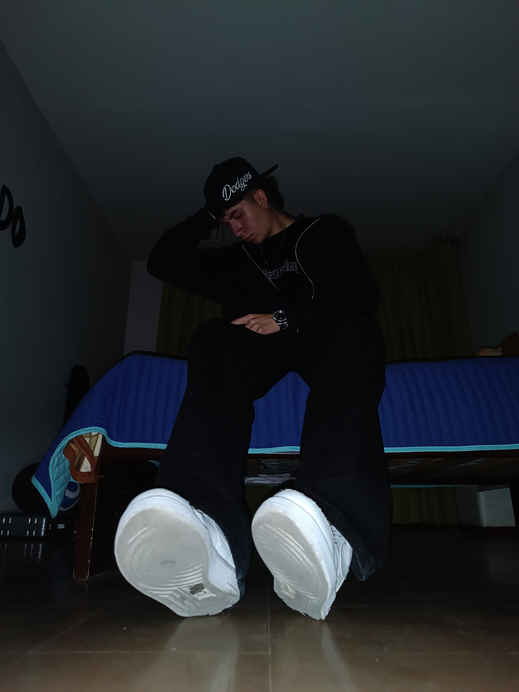

Ingeniero de Software
Construyo software con foco en código limpio y soluciones prácticas. Me gusta aprender tecnologías nuevas y aportar valor real en cada proyecto que desarrollo.
Me gusta el fútbol y el baloncesto, siendo el baloncesto el deporte al que más le dedico tiempo. Considero que soy pragmatico y me gusta aprender cosas nuevas, por lo que siempre estoy buscando mejorar mis habilidades y conocimientos en el desarrollo de software y la relación con mis compañeros.
Me gusta Luis Miguel y un poco de música urbana donde destaca mucho Cali Cartel, tambien se tocar piano y los bongos, aunque no soy un experto en ninguno de los dos instrumentos, me gusta retarme a aprender cosas nuevas y la música es una de ellas.
Actualmente estoy estudiando Ingeniería de Software en la Universidad cooperativa de Colombia, Campus Pasto, donde desarrollo mis habilidades en el área de la programación, destacando el compromiso y necesidad de seguir aprendiendo.
Una aplicación web para la gestión de tareas diarias en una barberia, que permite gestionar citas de manera eficiente.
Landing page para una tienda de camisetas de futbol y accesorios deportivos.
Un juego de lógica y rompecabezas en el que los jugadores deben resolver acertijos para avanzar en la historia.